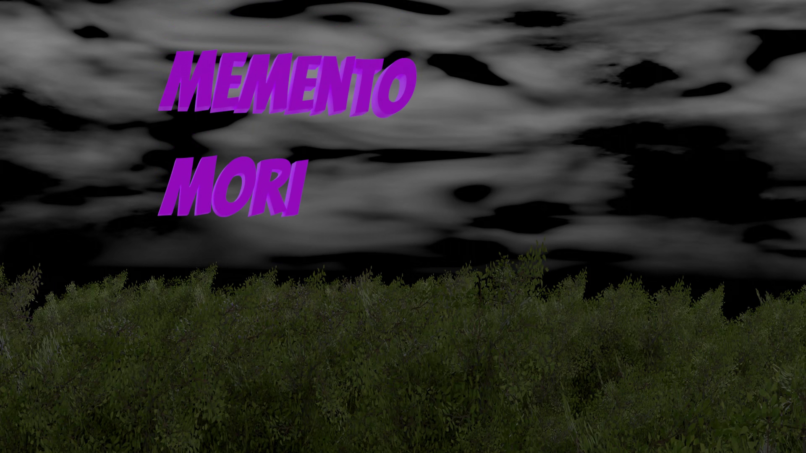

Memento Mori (Feb - May 2023)

My final project during college, I was given creative freedom to make whatever type of game I wanted as long as it fit the theme of "small world in the past". This prompt gave me the idea of playing as a ghost in a medieval era overseeing a whole town from above. The premise of the game is very simple as the player needs to drive the NPCs insane to keep their soul alive before a timer runs out and to do that, they must move around objects without the character noticing immediately and this will drive them insane as they wont know how objects got misplaced.
Key Aspects
NPCs
Each character lives in their own home and has a path they will continuously repeat during the game. They will react to the missing objects when they notice and move along a NavMesh.
Detection
My detection system isn't exactly the best way to do it but for someone who was new to the Unity Engine, it is functional enough. I used a mesh trigger collider acting like an FOV to notice when objects when inside it. If an object was out of place, the character would immediately stop their normal path and move to pick the item back up and put it back in its right spot. It wasn't the most efficient way to do it as the mesh would go through walls allowing the character to see through them.
Modelling
Not only did I need to make the game from scratch, I also needed to show off my modelling skills for this assessment and so I modelled lots of small objects and environments to represent each character and what their role would be. The character models were the only models not done by me as they (and their animations) were from mixamo.
Download
Find the final version download on my itch.io page.